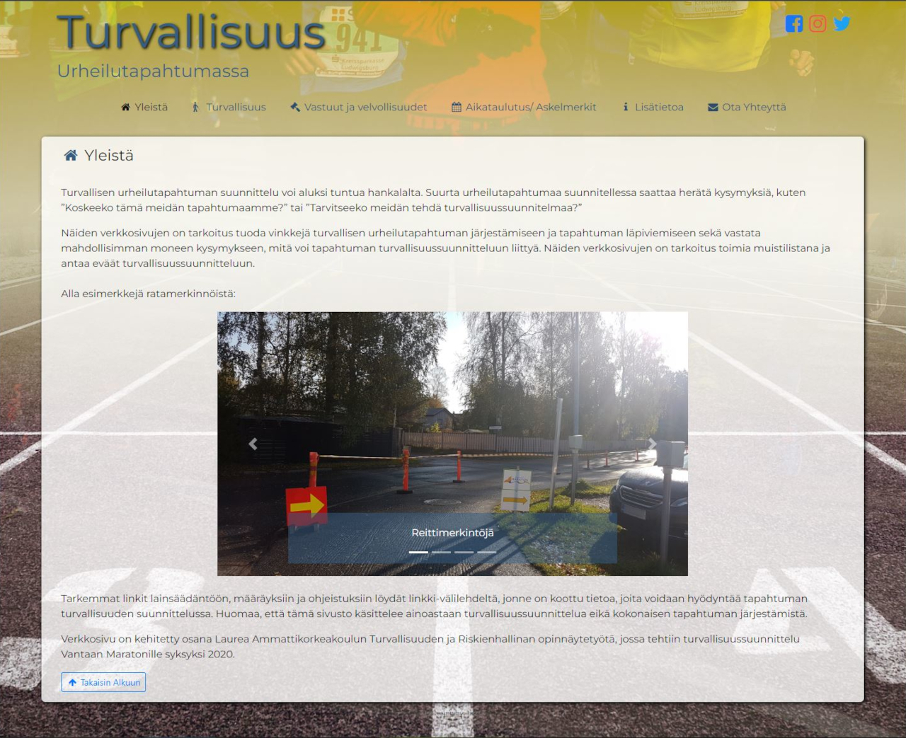
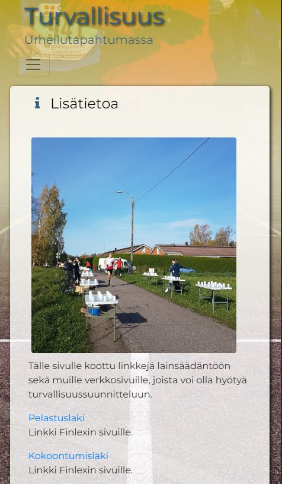

Turvallisuus Websivu
Websivun idea tuli Turvallisuuden ja riskienhallinnan oppilaalta joka ehdotti, että tekisin kurssin lopputyönä informaatiosivun urheilutapahtuman turvallisuus suunnitteluun. Sivusta tuli myös osa hänen opinnäytetyötänsä. Sivustoa rupesin hahmottelemaan ennen kuin pidimme palaverin sisällöstä. Palaverissa hahmoteltiin sisältöä sekä esitin ehdotuksia ulkoasulle.
Selainversio (Kuva suurenee klikkaamalla)
Aluksi tein sivusta rautalankamallin ja lähdin toteuttamaan sivua sen pohjalta. Sivun toteutuksessa käytin Bootstrap käyttöliittymäkehystä, joka on tarkoitettu responsiivisille sivuille. Sivua kehittäessä huomioin myös saavutettavuuden.
Sivun toteutuksessa on käytetty jonkin verran CSS efektejä tuomaan näyttävyyttä, joka olikin minulle uusi asia. Aiempaa websivu kokemusta on minulla vuosilta ennen CSS tyylien yleistymistä. Sivulla on käytetty myös laajasti eri HTML elementtejä. Sivulla on myös hyödynnetty Font Awesome ikoneita.
Mobiiliversio (Kuva suurenee klikkaamalla)
Sivua kehittäessä opin paljon uusia asioita saavutettavuudesta, responsiivisuudesta sekä tyylitiedostojen hyödyntämisestä. Suunnittelu oli myös iso osa projektia, jotta sivusta saataisiin miellyttävän näköinen, selkeä sekä helppo käyttöinen niin selaimella kuin mobiililaitteellakin. Projekti oli mielenkiintoinen ja opin sen aikana paljon websivun kehittämisestä.
Tarkastele sivua:
Linkki sivulle turvallisuus.github.io
Linkki lähdekoodiin:
Linkki lähdekoodiin
Githubissa